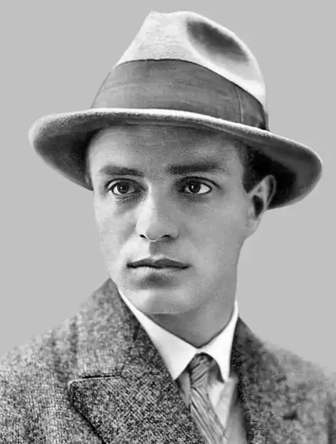

Бабюк Андрій Дмитрович (літ. псевдоніми Мирослав Ірчан, Абба, І. Мірко, Усусус та ін.) народився 14 липня 1896 р. у с. П'ядики (тепер Коломийського району Івано-Франківської області) в селянській родині.
Навчався у Коломийській гімназії, Львівській семінарії, яку закінчив у 1914 р.
Під час першої світової війни служив підхорунжим у корпусі січових стрільців у складі австро-угорської армії, був редактором газети "Стрілець". В лютому 1920 р. разом із Першою галицькою бригадою переходить на бік Червоної Армії. У березні 1920 р. Ірчан вступив до лав КП (б) У. На фронті перебував до кінця громадянської війни як голова редакційної колегії і комісар агітпоїзда, редагував газету для галицького селянства "Більшовик". Навесні 1921 р. переїхав до Києва, працював у школі червоних старшин, а затим одним із редакторів журналу "Галицький комуніст", друкував статті в газеті "Червона правда" та інших виданнях. У 1922—1923 рр. жив у Празі, навчався в тамтешньому університеті. В жовтні 1923 р. виїхав до Канади, працював у прогресивній місцевій пресі, редагував масові журнали "Робітниця" і "Світ молоді", був секретарем заокеанської філії "Гарт". Влітку 1932 р. Мирослав Ірчан повернувся на Україну, очолював у Харкові літературну організацію "Західна Україна". Став одним із перших членів новоутвореної в 1934 р. Спілки письменників СРСР. Вийшли друком понад 50 книжок Мирослава Ірчана. Серед них: "Сміх Нірвани" (1918), "Трагедія Першого травня", "Фільми революції" (1923), "Карпатська ніч" (1924), "В бур'янах" (1925), "Лі-Юнк-Шан" (1926), "Автопортрет", "Проти смерті" (1927), "Батько", "Генерал", "З прерій Канади в степи України", "Змовники", "Канадська Україна", "На півдорозі" (1930), "Матвій Шавала", "Осінь в димах", "Протокол" (1931), "Смерть Асуара" (1938); п'єси "Бунтар" (1922), "Безробітні", "Дванадцять", "Нежданий гість", "Родина щіткарів" (1923), "Товариство "Пшик" (1925), "Підземна Галичина" (1926), "Радій" (1928), "Дванадцять" (1930), "Драми" (1931), "Плацдарм" (1933). 28 грудня 1933 р. на підставі виданого ДПУ УРСР ордера № 67 Мирослава Ірчана в приміщенні ЦК КП(б)У після тривалої розмови з Постишевим заарештували. Його звинувачували в "приналежності до націоналістичної української контрреволюційної організації — Національний блок УВО, яка прагнула повалити Радянську владу на Україні збройним шляхом, збиранні секретних даних у військових частинах і приналежності до терористичної трійки, що готувала замах на Постишева. Судова "трійка" і Колегія ДПУ УРСР 28 березня 1934 р. розглянула його справу і винесла вирок: 10 років концтаборів. Покарання відбував у Соловецькій тюрьмі. Місцеві органи НКВД запідозрили, що, перебуваючи в місцях позбавлення волі, Бабюк А. Д. продовжував "перебувати на своїх контрреволюційних позиціях". Тому судова "трійка" УНКВС Ленінградської області в 1937 р. (протокол № 83 від 9 жовтня), повторно засудила його до вищої міри покарання — розстрілу. Вирок виконано 3 листопада 1937 р. Військовий трибунал Київського військового округу З квітня 1956 р. переглянув справу Бабюка А. Д. Встановлено, що "звинувачення підсудного були необґрунтовані, тому що особисті зізнання органами попереднього слідства не перевірені, іншими об'єктивними даними не підтверджені і є сумнівними". Позитивні характеристики Мирославу Ірчану дали письменники Андрій Головко, Любомир Дмитерко, Микола Марфієвич, Дмитро Бедзик, Максим Рильський, Антін Шмигельський. На основі цього попередні вироки були відмінені і справа припинена за відсутністю складу злочину. Мирослав Ірчан реабілітований посмертно.